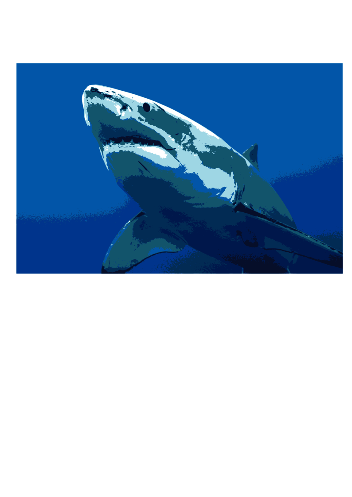

This page shows the documentation of the things I have learnt in term 1.
Computer Aided Design
| Image of Myself | Image of Seaside |
|---|
 |
| Final Image |
|---|
Raster Graphics (GIMP)
We were tasked to choose an image of ourselves, remove the background of the photo and substitute the background with a seaside scene. To do so, using GIMP I first used the 'Free Select Tool' to trace the image of myself. Then, I inverted the selection and removed the background by making it transparent. Afterwards, I added the image of the seaside by making it another layer. And the final product is an image of me looking like I am talking a walk by the seaside.
| Image of Animal | Image of Animal Vector Art |
|---|
|  |
Vector Graphics (INKSCAPE)
We were tasked to choose an image of an animal. I chose a shark as seen above. Using Inkscape, I was able to generate a vector art of this shark image. I clicked on 'path', then 'Trace Bitmap'. After that, I clicked on 'Multicolour' and adjusted the scans until I was satisfied. The result is the vector image on the right as seen above.
3D Models
LEGO BRICK
documentation
EXTRUDES & PLANES
documentation
NAMETAG
documentation
MUG
documentation
KNIGHT CHESS PIECE
documentation
HEX NUT
documentation
EARBUD
documentation